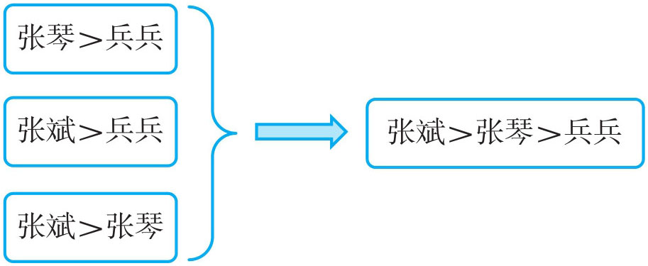
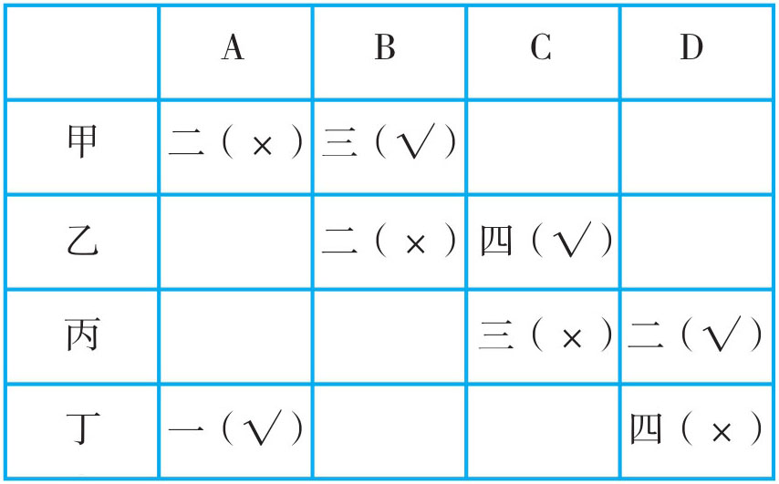
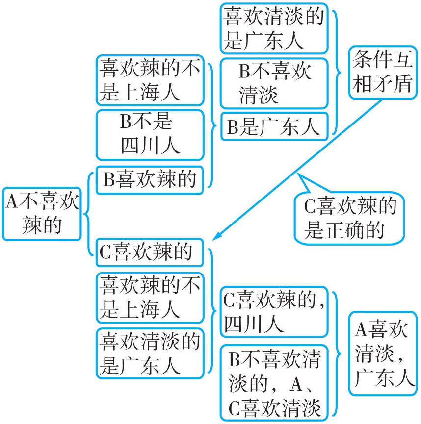
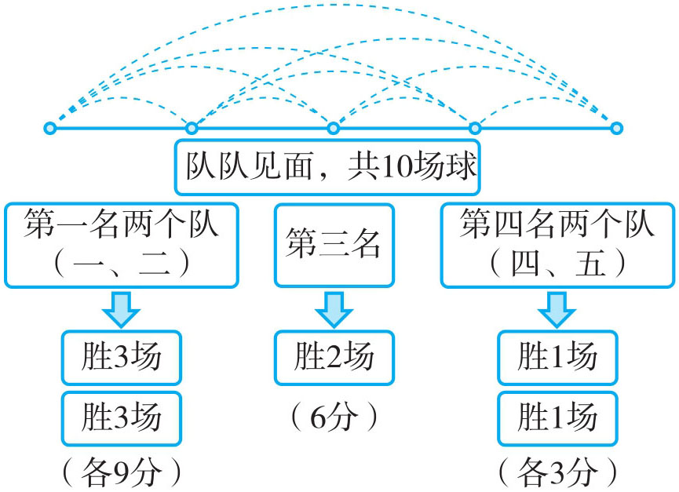
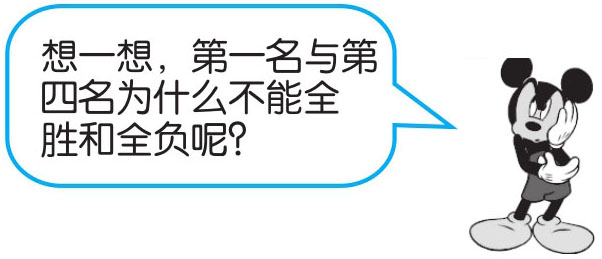
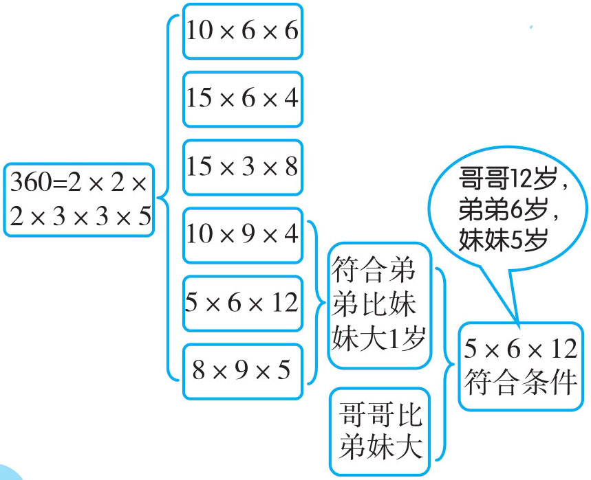

推理就是由一个或几个已知的判断（前提），推导出一个未知的结论的思维过程。按推理过程的思维方向划分，主要有演绎推理、归纳推理和类比推理。
解答推理问题常用的方法： 图示法、假设法、排序法、画图连线法等。
思考的方向：
（1）选准突破口，分析时综合几个条件进行判断。
（2）根据题中条件，在推理过程中，不断排除不可能的情况，从而得出要求的结论。
（3）对可能出现的情况作出假设，然后再根据条件推理，如果得到的结论和条件不矛盾，说明假设是正确的。
（4）遇到比较复杂的推理问题，可以借助图表进行分析。
例1 有三个小朋友在谈论这次期末考试成绩。张斌说：“张琴考得比兵兵高。”张琴说：“张斌考得比兵兵高。”兵兵说：“张琴考得比张斌低。”这三位小朋友中，谁考得最高？谁考得最低？

这三位小朋友中，张斌考得最高，兵兵考得最低。
例2 A、B、C、D四位同学参加100米的短跑比赛。甲说：“A是第二，B是第三。”乙说：“C是第四，B是第二。”丙说：“D是第二，C是第三。”丁说：“D是第四，A是第一。”又知道甲、乙、丙、丁每人都只说对了一半，那么他们的名次是怎样排列的？

A第一，B第三，C第四，D第二。
例3 A，B，C三名学生，一个是广东人，一个是四川人，一个是上海人；他们之中有喜欢吃辣的菜，有的喜欢吃甜的菜，有的喜欢吃清淡的菜，且还有以下信息：
（1）A不喜辣的，B不喜欢清淡的；
（2）喜欢辣的不是上海人；
（3）喜欢清淡的是广东人；
（4）B不是四川人。
请问：他们三人分别是哪里人，喜欢什么菜？

A喜欢清淡的菜，是广东人；B喜欢甜的菜，是上海人；C喜欢辣的菜，是四川人。
例4 在一次篮球联赛中，某一小组有五个队，实行队队见面，胜者得3分，负者得0分，最后以积分高的前两名出线。比赛结果发现，第一名和第四名都是两队并列（并列就没有第二名与第五名）。问：第三名得多少分？
五个队，实行队队见面，共10场球，对于每个队来说都是4场球。因第一名和第四名并列，所以没有两个队都胜或都输。那只有第一名胜3场，第四名胜1场，第三名胜两场。第三名胜两场就是2×3=6（分）。

第三名得6分。

例5 一天，读六年级的哥哥，带着一个弟弟和一个妹妹去逛超市。哥哥在门口遇到彭老师，彭老师问他们三人是不是一家人。哥哥说：“我只有一个弟弟，妹妹是小姑家的。”彭老师又问小弟弟、小妹妹多大了。哥哥说：“我们三个的年龄之积等于360，并且弟弟比妹妹年龄大1岁。”彭老师想了想，很快说出了弟弟与妹妹的年龄。你知道彭老师说的年龄分别是多少吗？

答：弟弟6岁，妹妹5岁。
1．有三个小朋友在谈论谁打碎了玻璃瓶。
甲说：“是丙打碎的。”
乙说：“不是我打碎的。”
丙说：“是乙打的。”他们当中只有一个人说了谎话，到底是谁打碎了玻璃瓶？
2．姜艳、龚斌、付强三位老师，其中一位教语文，一位教数学，一位教体育。已知：龚斌和语文老师是邻居；付强和语文老师不是邻居；付强和体育老师是亲戚。请问：三位老师分别教什么科目？
3．已知甲、乙、丙三个人中，只有一个人见过大熊猫。甲说：“我见过。”乙说：“我没有见过。”丙说：“甲没有见过。”如果三个人中有一个讲的是真话，那么谁见过大熊猫？
4．一场篮球比赛中，A，B，C，D，E五个队被分到了一个小组，实行队队见面，即每两个队都要打一场。规定胜者5分，负者0分，没有平局。现在知道：A与B并列第一名，D比C的名次高。每个队都至少胜了一场，求每个队的得分。
5．三个人分别穿蓝，灰，黑三种颜色的衣服和蓝，灰，黑三种颜色的裤子。穿蓝色衣服的人说：“我们三人中每人的衣服和裤子颜色都不相同。”穿黑裤子的人说：“你说得对呀，真的是这样的呢。”请问：三人的衣服和裤子各是怎样的搭配？
6．有5个不透明的袋子，分别装着5种不同颜色的小球，小球的颜色分别为红，黄，绿，蓝，白5种，A，B，C，D，E五个人猜它们的颜色，他们的话如下：
A说：第一袋是蓝的，第五袋是白的；
B说：第二袋是黄的，第五袋是绿的；
C说：第三袋是红的，第四袋是黄的；
D说：第一袋是绿的，第二袋是蓝的；
E说：第二袋是白的，第四袋是蓝的。
以上五人，每人的话一半是真话，一半是假话，请问：每个袋子里的小球颜色分别是什么？
7．薛峰，开太和马兵一位是工程师，一位是技术员，一位是教师。现在只知道：开太和技术员不同岁；技术员比薛峰年龄小；马兵比教师年龄大。请问：谁是工程师，谁是技术员，谁是教师？
8．主人对客人说：“院子里有三个小孩，他们的年龄之积等于72，年龄之和恰好是我家的楼号，楼号你是知道的，你能求出这些孩子的年龄吗？”客人想了一下说：“我还不能确定答案。”他站起来，走到窗前，看了看楼下的孩子说：“有两个很小的孩子，我知道他们的年龄了。”主人家的楼号是
，孩子的年龄是
、
、
。
9．甲、乙、丙三人进行万米赛跑，甲是最后一个起跑的，在整个比赛过程中，甲与乙、丙的位置共交换了11次，则比赛的结果甲是第 名。